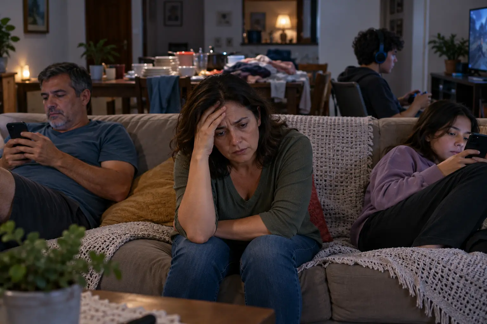
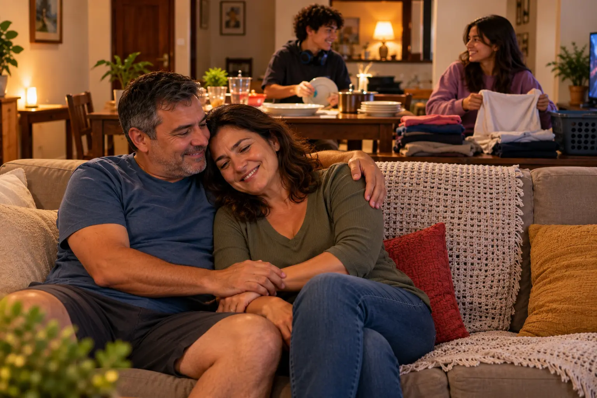

Menopausa e pós-menopausa: entendendo essa fase com clareza
Entenda o que acontece no corpo e nas emoções da mulher na menopausa e na pós-menopausa, os tratamentos que existem hoje e como a família pode ajudar, em linguagem simples.
Chega uma hora em que o corpo da mulher começa a mudar de ritmo. Isso não é um problema a ser escondido, nem um fim de linha. É uma fase, com nome e explicação, que toda mulher que viver o suficiente vai atravessar. Quanto mais clareza a gente tem sobre o que está acontecendo, mais fácil é atravessar essa fase em paz, e menos espaço sobra para frases como "isso é frescura" ou "é coisa da sua cabeça".
Aqui você vai entender, em linguagem simples, o que é a menopausa e a pós-menopausa, quais sinais o corpo e as emoções costumam dar, o que muda por dentro nos anos seguintes, quais tratamentos existem hoje e como a família pode fazer diferença.
O que é a menopausa, afinal
A menopausa é o momento em que a menstruação para de vir, de forma definitiva. Os ovários vão reduzindo aos poucos a produção de dois hormônios, o estrogênio e a progesterona, até que a menstruação some por completo. Costuma acontecer entre os 45 e os 55 anos, embora cada corpo tenha o seu próprio calendário.
Essa história tem três momentos:
- Climatério (ou perimenopausa): é a transição. Os ciclos ficam irregulares, os hormônios sobem e descem sem aviso e os primeiros sinais aparecem. Pode durar de 4 a 8 anos, e muitas vezes começa antes dos 45.
- Menopausa: é a data da última menstruação. Só dá para ter certeza depois de passar 12 meses seguidos sem menstruar.
- Pós-menopausa: é tudo o que vem depois. Uma fase que pode durar décadas e que tem cuidados próprios.
Na maioria das mulheres acima de 45 anos, o diagnóstico é feito pela conversa com o médico e pela história dos ciclos. Exame de sangue nem sempre é necessário.
Quando a menopausa chega mais cedo
Algumas mulheres chegam à menopausa antes do tempo. Quando acontece antes dos 40 anos, os médicos chamam de insuficiência ovariana prematura; entre 40 e 45, de menopausa precoce. Ela também pode ser provocada: por uma cirurgia que retira os ovários, por quimioterapia ou radioterapia. Nesses casos os sinais costumam ser mais intensos, porque a queda dos hormônios é brusca, e os cuidados com ossos e coração precisam começar mais cedo. Por isso, quem passou por isso deve conversar com o médico mesmo sem sentir nada.
Não é uma doença. É uma transição hormonal natural. Mas natural não quer dizer que tenha de ser sofrida.
Os sinais que o corpo dá
Cada mulher vive essa fase de um jeito diferente. Algumas quase não notam, outras sentem bastante. Os sinais mais comuns são:
Nenhum desses sinais precisa ser encarado sozinho, nem em silêncio. Todos têm explicação e, na maioria dos casos, também têm alívio.
Por que isso acontece
O estrogênio não cuida só da menstruação. Ele também participa da regulação da temperatura do corpo, do sono, do humor, da memória, da lubrificação vaginal, da força dos ossos, da proteção das artérias e até da elasticidade da pele. Quando a produção desse hormônio cai, todos esses sistemas sentem a mudança. É por isso que os sinais aparecem em áreas tão diferentes do corpo e da mente ao mesmo tempo.
Saúde emocional: não é frescura
Essa talvez seja a parte mais incompreendida da menopausa. Os calores todo mundo enxerga; o que acontece por dentro, quase ninguém.
O estrogênio age diretamente no cérebro. Ele ajuda a regular substâncias como a serotonina e a dopamina, que têm tudo a ver com o humor, a motivação e o sono. Na transição, esse hormônio não cai de forma tranquila: ele sobe e desce sem aviso. O resultado pode ser uma mulher que vai da irritação ao choro em pouco tempo, que se sente sem paciência para coisas que antes tirava de letra, ou que simplesmente diz "eu não me reconheço mais".
E não é só impressão. Um estudo publicado em 2024 por pesquisadores da Universidade de Cardiff, no Reino Unido, acompanhou mais de 128 mil mulheres e encontrou que, nos anos ao redor da última menstruação, o risco de surgir transtorno bipolar pela primeira vez mais que dobra, e o risco de depressão sobe cerca de 30%. Os próprios pesquisadores destacaram que a saúde mental nessa fase recebe muito menos atenção do que os sintomas físicos.
É importante saber diferenciar, sem se autodiagnosticar:
- Oscilações de humor: irritação, sensibilidade e choro mais fácil, que vêm e vão. São comuns e costumam melhorar com cuidados do dia a dia e, às vezes, com tratamento dos sintomas da menopausa.
- Depressão: tristeza ou vazio que dura a maior parte do dia, quase todos os dias, por mais de duas semanas, com perda do interesse pelas coisas, cansaço constante e alterações no sono e no apetite.
- Transtorno bipolar: períodos de depressão que se alternam com fases de euforia ou agitação fora do comum, pouca necessidade de sono, ideias aceleradas e decisões impulsivas. Só um profissional pode fazer esse diagnóstico. E quem já tem o transtorno pode perceber piora nessa fase, o que pede ajuste no acompanhamento.
O que esses quadros têm em comum é que, por fora, muitas vezes não aparecem. A mulher continua trabalhando, cuidando da casa, sorrindo nas fotos. Por isso é tão fácil alguém dizer que é "frescura". Não é. É sofrimento real, com origem no próprio corpo e reflexos até físicos, mas que tem tratamento.
Procure ajuda se: a tristeza não passa, o sono desapareceu, as coisas que davam prazer perderam a graça, a irritação está destruindo as relações ou se aparecerem pensamentos de que a vida não vale a pena. O ginecologista é um bom começo, e ele pode indicar um psiquiatra ou psicólogo. Em momentos de crise, o CVV atende de graça pelo telefone 188, 24 horas por dia.
Se a autoestima também foi abalada nessa fase, vale ler o nosso artigo sobre autoestima e autoconfiança depois dos 50.
Para quem convive com ela
Este pedaço é para o marido, os filhos e quem divide a casa com uma mulher nessa fase.
Muita mulher atravessa a menopausa sozinha no meio da própria família. Ela está exausta, com calor, dormindo mal, com o humor descontrolado, e ainda escuta que está "insuportável". A família, sem entender, se afasta. Cada um se fecha no seu canto. E o que era só uma fase difícil vira briga, distância e, em muitos casos, separação, não por falta de amor, mas por falta de entendimento.


O que realmente ajuda:
- Entenda que não é contra você. A irritação e o choro têm causa no corpo dela. Levar para o lado pessoal só aumenta a distância.
- Ouça sem julgar e sem minimizar. Frases como "isso é coisa da sua cabeça", "todo mundo passa por isso" ou "você está exagerando" machucam. Troque por "o que você está sentindo?" e "como eu posso ajudar?".
- Divida as tarefas da casa. Nos dias de sono ruim e cansaço, louça lavada e roupa dobrada falam mais do que muitas palavras.
- Acompanhe numa consulta. Ir junto ao médico mostra que o problema é do casal e da família, não só dela.
- Tenha paciência com a intimidade. A queda da libido e a dor na relação têm causas físicas e tratamento. Conversa e carinho vêm antes de cobrança.
- Observe os sinais de alerta. Se ela parecer triste por semanas, isolada ou sem vontade de nada, incentive a buscar ajuda e se ofereça para ir junto.
Casais que atravessam essa fase juntos costumam sair dela mais fortes. Para continuar essa conversa, leia também vida e relacionamentos depois dos 50.
Pós-menopausa: o que muda por dentro
Depois que a menstruação para de vez, os calores tendem a diminuir com os anos. Mas a falta de estrogênio continua agindo em silêncio, e é aqui que mora a parte mais importante da prevenção.
Ossos
O estrogênio protege os ossos. Nos primeiros anos depois da menopausa, a perda de massa óssea acelera, e a osteoporose costuma não dar sinal nenhum até a primeira fratura, muitas vezes no punho, na coluna ou no quadril. Fortalecer os ossos agora é cuidar da independência daqui a 20 anos.
Coração e circulação
Antes da menopausa, a mulher tem uma certa proteção hormonal contra infarto e derrame. Depois, essa proteção diminui: o colesterol ruim tende a subir, a pressão também, e o risco do coração vai se aproximando do risco dos homens. A doença cardiovascular é uma das principais causas de morte das mulheres depois dos 50.
Peso e barriga
O metabolismo fica mais lento e a gordura migra para a região da barriga. Essa gordura abdominal não é só questão de aparência: ela aumenta o risco de diabetes e de problemas no coração. Às vezes a barriga estufada também tem relação com a musculatura do abdômen, como explicamos no artigo sobre diástase abdominal depois dos 50.
Bexiga, vagina e assoalho pélvico
Sem estrogênio, os tecidos da vagina, da uretra e da bexiga ficam mais finos e frágeis. É o que os médicos chamam de síndrome geniturinária da menopausa. Diferente dos calores, ela não melhora sozinha com o tempo; tende a piorar se não for tratada. A boa notícia é que o tratamento é simples e eficaz.
Articulações
As dores nas articulações também aumentam nessa fase, e a artrose é mais comum nas mulheres. Falamos disso em detalhes no artigo sobre dor nas articulações depois dos 50.
Quais tratamentos existem hoje
Reposição hormonal
A terapia de reposição hormonal ainda assusta muita gente por causa de notícias antigas. Hoje, a visão das principais sociedades médicas é mais equilibrada. De acordo com a Menopause Society (a sociedade norte-americana de menopausa), para mulheres com menos de 60 anos ou com menos de 10 anos de menopausa, e sem contraindicações, os benefícios costumam ser maiores do que os riscos. A reposição é o tratamento mais eficaz para os calores e também ajuda a proteger os ossos.
Mas ela não é para todas. Em geral, não é indicada para quem já teve câncer de mama ou de endométrio, trombose, AVC ou infarto, doença ativa no fígado ou sangramento vaginal sem explicação. O tipo de hormônio, a dose, a forma (comprimido, adesivo, gel) e o tempo de uso são decididos caso a caso, com acompanhamento e exames.
Importante: hormônios comprados sem receita, "implantes da beleza" e fórmulas milagrosas da internet não são reposição hormonal segura. Só o médico pode indicar.
Opções sem hormônio
Para quem não pode ou não quer usar hormônio, existem caminhos:
- Fezolinetanto: em junho de 2026, a Anvisa aprovou o primeiro remédio sem hormônio feito especificamente para os calores da menopausa. Ele age no centro do cérebro que regula a temperatura. Precisa de receita e de exames do fígado antes e durante o uso, e não trata o ressecamento vaginal nem protege os ossos.
- Alguns antidepressivos em dose baixa: além de ajudar no humor, podem reduzir os calores. A escolha é do médico.
- Tratamento vaginal local: cremes com dose baixa de estrogênio aplicados direto na vagina agem no local e são indicados para o ressecamento e os problemas urinários. Hidratantes e lubrificantes vaginais vendidos em farmácia também ajudam.
O que ajuda no dia a dia
Não existe uma fórmula única, mas algumas atitudes fazem diferença real:
- Força muscular, duas a três vezes por semana. Exercícios com peso, elásticos ou o próprio corpo estimulam os ossos e os músculos. Caminhada é ótima para o coração, mas sozinha não basta para os ossos. Veja os exercícios do artigo sobre movimento e autonomia depois dos 50.
- Cálcio, vitamina D e proteína. Leite, iogurte, queijos, sardinha, folhas verde-escuras e gergelim ajudam no cálcio. A vitamina D vem principalmente do sol e, quando falta, o médico pode indicar suplemento. Ovos, carnes, feijão e lentilha garantem a proteína que mantém os músculos. Ideias simples estão em alimentação simples para uma vida mais ativa.
- Menos álcool, menos café à noite e comidas muito apimentadas podem diminuir as ondas de calor em algumas mulheres.
- Parar de fumar. O cigarro piora os calores, acelera a perda óssea e aumenta o risco do coração.
- Rotina de sono: quarto fresco, roupa de cama leve, horário regular e menos telas antes de dormir.
- Vestir-se em camadas, para tirar uma peça quando o calor chegar.
- Exercícios para o assoalho pélvico, que ajudam nos escapes de urina e na vida íntima.
- Conversar. Com o marido, com os filhos, com amigas que estão na mesma fase. Isolamento só piora tudo.
Exames que valem a pena nessa fase
Leve esta lista para a próxima consulta e pergunte ao médico quais fazem sentido para você:
- Densitometria óssea: mede a força dos ossos. Costuma ser indicada a partir dos 65 anos, ou antes em quem tem fatores de risco, como menopausa precoce, magreza, fumo ou uso prolongado de corticoide.
- Mamografia: conforme a orientação do seu médico e as regras do seu plano de saúde ou do SUS.
- Colesterol, glicemia e pressão arterial: para acompanhar o coração.
- Preventivo (Papanicolau): segue sendo importante.
- Vitamina D e função da tireoide, quando o médico achar necessário. A tireoide, aliás, pode causar sintomas parecidos com os da menopausa.
Mitos e verdades
Engordar é inevitável?
"Toda mulher engorda na menopausa."
Mito, em parte. O metabolismo desacelera e a gordura muda de lugar, mas ganhar peso não é destino. Movimento e alimentação fazem diferença real.
Reposição hormonal e câncer
"Reposição hormonal causa câncer."
Não é tão simples. O risco depende do tipo de hormônio, da idade, do tempo de uso e da história de cada mulher. Para muitas mulheres abaixo dos 60, os benefícios superam os riscos. Quem decide é o médico, junto com a paciente.
Chás e soja
"Chá de amora ou de soja resolve os calores."
Não há comprovação científica consistente. Alguns estudos com soja mostram efeito pequeno em parte das mulheres. Não substitui tratamento e não deve atrasar a consulta.
Vida sexual
"Depois da menopausa, a vida sexual acaba."
Mito. O ressecamento e a queda da libido têm tratamento, e muitas mulheres vivem a intimidade com mais liberdade depois dessa fase.
Mudanças de humor
"Mudança de humor na menopausa é frescura."
Mito. Tem causa hormonal comprovada e, em alguns casos, pode virar depressão ou outro transtorno que precisa de tratamento.
Ginecologista depois da menopausa
"Se a menstruação parou, não preciso mais ir ao ginecologista."
Mito. A pós-menopausa é justamente a fase de cuidar dos ossos, do coração e da saúde íntima.
Quando buscar ajuda médica
Isso aqui precisa ser dito sem rodeios: sinais intensos, sangramento depois de a menstruação já ter parado, tristeza que não passa ou desconfortos que atrapalham o seu dia a dia não são algo para aguentar calado. Sangramento na pós-menopausa, em especial, sempre precisa ser avaliado. Existe acompanhamento médico específico para essa fase, e só um profissional pode avaliar o que é seguro e adequado para o seu caso. Buscar essa ajuda não é exagero, é cuidado.
E para quem está do lado: acolher também é tratamento.
Importante: este conteúdo é educativo e não substitui a avaliação de um profissional de saúde. Só o médico pode confirmar o diagnóstico e indicar o tratamento adequado para o seu caso.
Fontes e leituras científicas
- The Menopause Society (antiga North American Menopause Society) — The 2022 hormone therapy position statement. Menopause, 2022.
- Shitomi-Jones L. M., Di Florio A. et al. — Exploration of first onsets of mania, schizophrenia spectrum disorders and major depressive disorder in perimenopause. Nature Mental Health, 2024 (Universidade de Cardiff e Bipolar UK).
- Conselho Federal de Farmácia — Anvisa aprova novo medicamento sem hormônios para aliviar sintomas da menopausa (junho de 2026).
- FEBRASGO (Federação Brasileira das Associações de Ginecologia e Obstetrícia) — materiais sobre climatério e menopausa.
- Ministério da Saúde — Manual de atenção à mulher no climatério/menopausa.